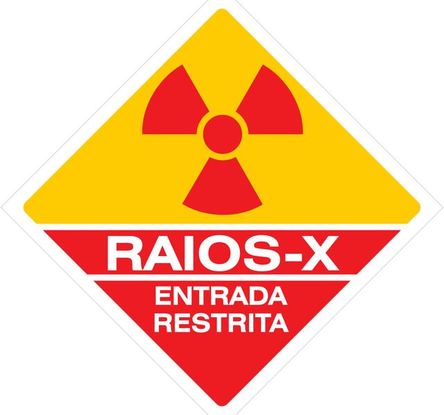
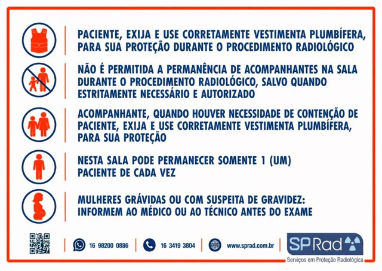

Baixe gratuitamente sinalizações de proteção radiológica para sua clínica ou serviço de saúde.

Aviso de controle de acesso durante procedimentos radiológicos.
DOWNLOAD PDFOrientação para mulheres grávidas ou com suspeita de gravidez antes do exame.
DOWNLOAD PDF
Quadro completo com orientações para pacientes e acompanhantes.
DOWNLOAD PDFOrientação sobre o uso correto da vestimenta plumbífera pelo paciente.
DOWNLOAD PDFOrientação sobre a permanência de acompanhantes na sala de exames.
DOWNLOAD PDFOrientação sobre o uso da vestimenta plumbífera pelo acompanhante durante a contenção do paciente.
DOWNLOAD PDFOrientação sobre a permanência de somente um paciente por vez na sala.
DOWNLOAD PDFOrientação sobre gravidez ou suspeita de gravidez antes do exame.
DOWNLOAD PDFSobre as sinalizações: Os materiais disponibilizados pela SP Rad auxiliam na sinalização e orientação de proteção radiológica em serviços de saúde. A utilização deve considerar as características e os procedimentos realizados em cada serviço.
Consulte documentos e referências aplicáveis aos serviços de radiologia e diagnóstico por imagem.
Estabelece os requisitos sanitários para a organização e o funcionamento de serviços de radiologia diagnóstica ou intervencionista.
Importante: A legislação e os atos normativos podem ser atualizados ou substituídos. Consulte sempre as versões vigentes disponibilizadas pelos órgãos oficiais.
Entre em contato com nossa equipe e descubra como podemos ajudar sua instituição a garantir segurança e conformidade legal.
ENTRE EM CONTATO